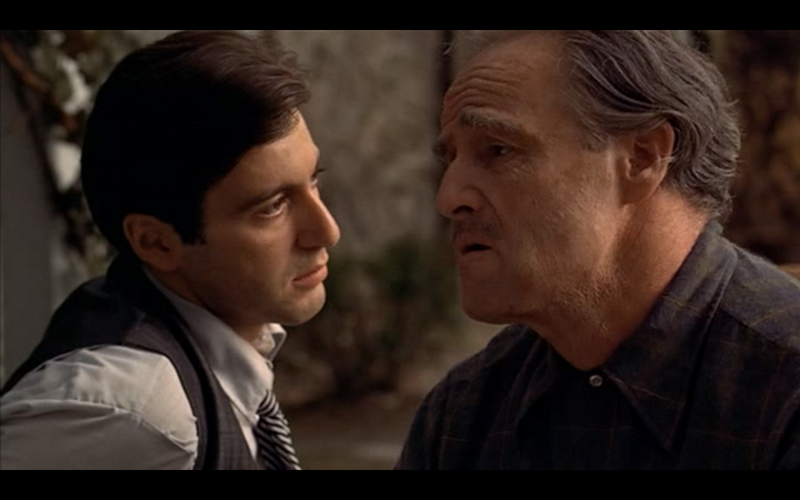
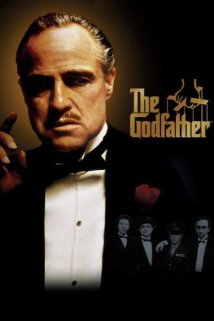
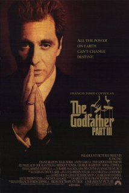
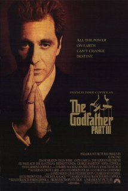
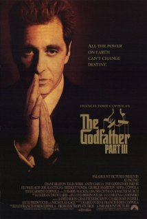
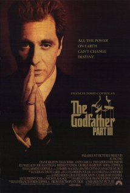
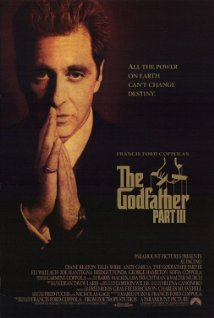

A Movie Matching System: Which movie and which part is the clip coming from
Final Project for CS 205
View on GitHub
Download .zip
Download .tar.gz

Which movie is this scene from?


Objective
Design
Data
Soundtrack database
Clip to match
User Instructions
Performance and Efficiency
What We've Learned
Limitation and Extension
Our Project Experience
Authors and Contributors
![[godfather2]](gf2.jpg) 


